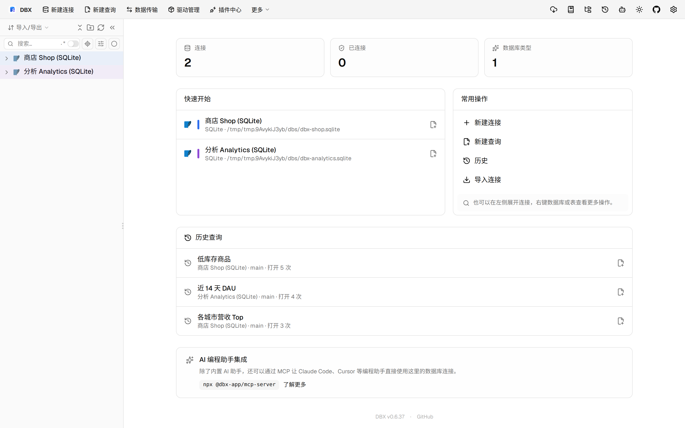
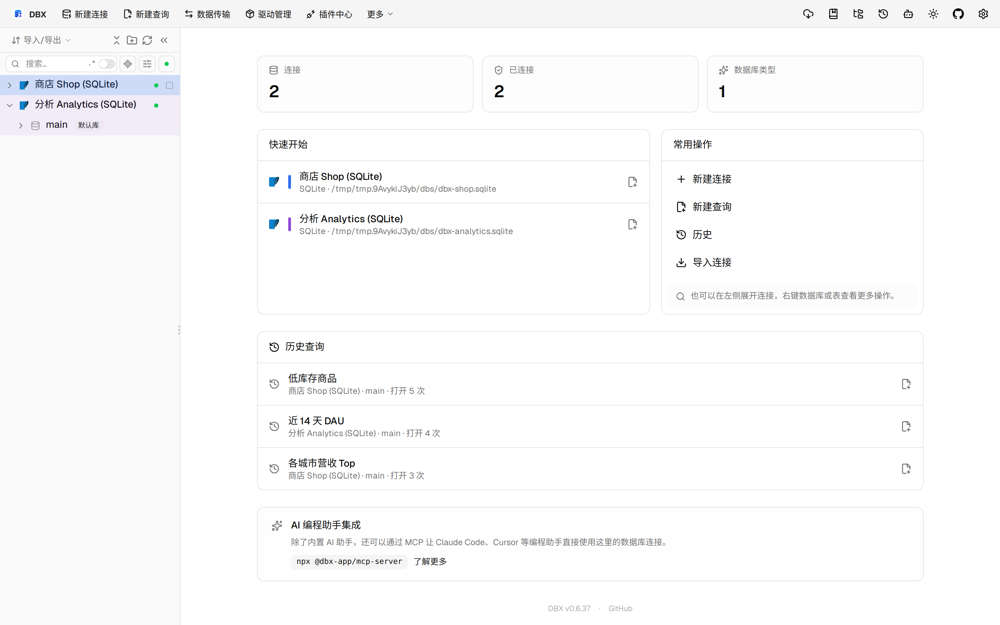
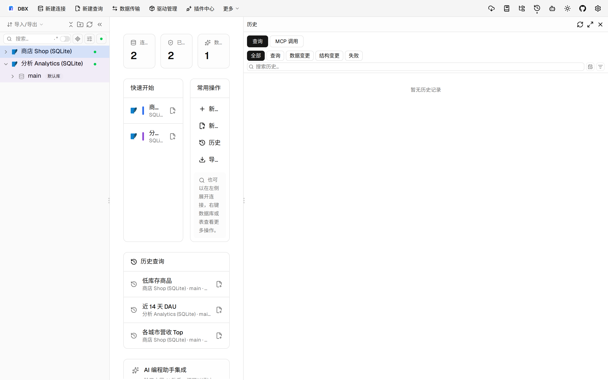
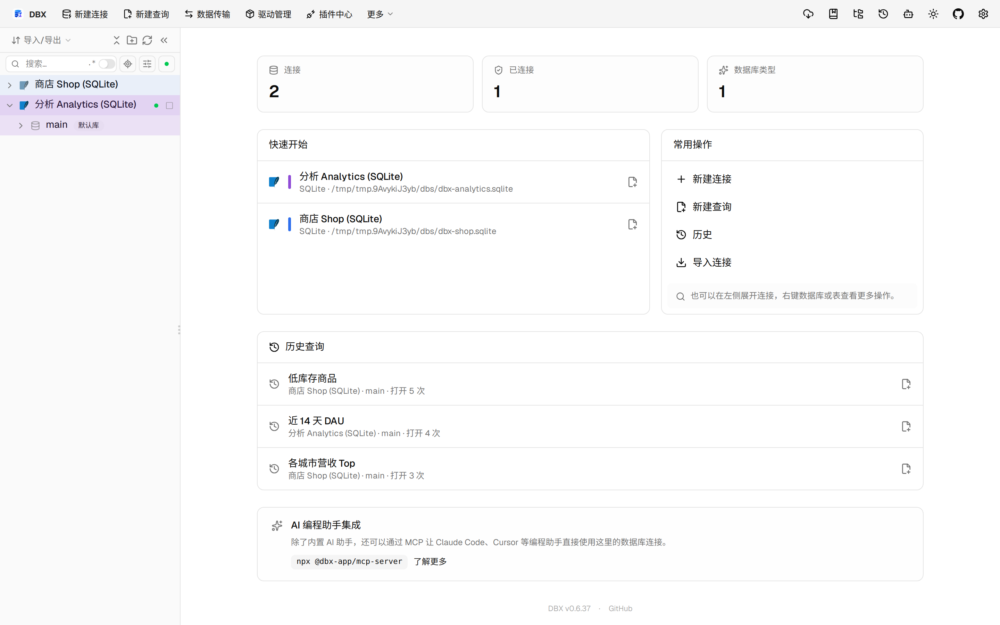

#11389 界面预览
commit 41ef9d9 · 回到 PR · 这次修改把 OceanBase Oracle 也纳入了 Oracle 风格的 ROWID 处理：查询结果映射、隐藏主键补投影、以及可编辑结果的行标识绑定都会按 `ROWIDTOCHAR(ROWID)` / `__DBX_ROWID` 规则工作，避免把内部列当成物理列投影。对显式选出的 ROWID、物理 `rowid` 列、以及已有真实主键的情况也补了边界处理。
⚠️ 这次录制有 7 步没能按计划执行；带 ⚠️ 的截图拍摄于步骤失败之后，画面未必是说明文字所描述的状态。
红线是鼠标走过的轨迹，红色圆环是一次点击；底部文字是这一步在做什么。多个场景各自从应用初始状态开始。空格暂停，← → 逐段查看。

打开查询页与历史 · 应用首页，查看左侧连接与历史查询入口

⚠️ 打开查询页与历史 · 打开产品表后的数据网格

⚠️ 打开查询页与历史 · 查看历史查询列表

⚠️ 查看查询结果映射 · 打开大表后的数据网格，查看结果列与行标识位置